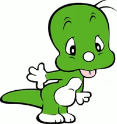

- 뽀로로
- 타요
- 둘리
- 폴리

《뽀롱뽀롱 뽀로로》는 최종일이 기획하고 아이코닉스와 오콘, SK브로드밴드, 스튜디오 게일, EBS가 제작한 대한민국의 텔레비전 애니메이션이다.
1983년에 월간 보물섬에 연재된 《아기공룡 둘리》의 주인공이자 뽀로로, 자두와 더불어 한국의 상징과도 같은 캐릭터이다.
본래 공룡 시대에 살고 있던 아기 공룡이다.
성우는 많은 올드팬들이 구 애니메이션과 극장판을 맡은 박영남을 선호한다.
NEW 아기공룡 둘리에서는 세대 교체의 일환으로 김서영을 기용했으나 호불호가 꽤나 갈리는 편.[
이름의 유래는 둘째에서 따왔다. 원작 만화에서 둘리 형의 이름이 '하나'라서 둘리의 이름을 둘째라는 뜻의 '두리(둘+2)'라고 지었는데 이 이름이 너무 흔해서 현재의 이름으로 바꾸게 되었다고.
참고로 '하나'는 사실 형이 아니라 누나다.
신체 나이는 8세지만 공룡이라 실제 나이는 1억 +α살로 국산 캐릭터들 중에서도 최고령이다.
원래는 인간 남자 아이로 나올 예정이었으나 심의 때문에 공룡으로 수정되었다고 원작자 김수정이 언급했다.
또한 원래 둘리의 피부색은 갈색이었는데 당시 보물섬 편집장이 색칠한 걸 보고 "왜 하필 똥색입니까?"라고 해서 녹색으로 바꾸게 되었다고 한다.